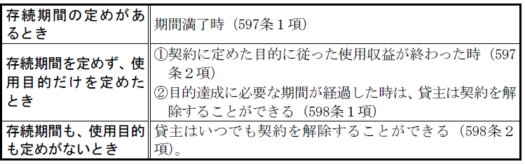

第６編 契約各論
第３章 交換
交換とは、当事者双方が金銭の所有権以外の財産権を移転することを約することによって成立する契約をいう（586条）。
有償・双務・諾成契約である点で、その法的性質は売買と同じである。
ただし、両当事者の債務がともに金銭の所有権以外の財産権の移転を目的とする点が唯一、売買と異なる点である。
有償契約であることから、売買に関する規定が準用される（559条）。
第４章 消費貸借
1. 意義
消費貸借は、金銭その他の代替物を借りて（借主は目的物の所有権を取得する）消費し、後にこれと同種・同等・同量の物を返還する契約である。消費貸借には、要物契約としての消費貸借（587条）と書面でする諾成的消費貸借（587条の２）がある。
2. 要物契約としての消費貸借（587条）
(1) 要物契約性
消費貸借を書面でしない場合、目的物を実際に借主が受け取ることで契約が成立する要物契約となる。
(2) 片務契約性
要物契約としての消費貸借は、目的物の引渡しがあってはじめて契約が成立するので、貸主は、使用収益させる義務を負担せず、借主だけが債務（返還債務）を負担する片務契約となる。
3． 諾成的消費貸借（587条の２）
(1) 要式契約性・諾成契約性
消費貸借を書面でする場合（要式契約。要物的消費貸借とする旨の特約があるものは除く。）、目的物の引渡しを要せずに貸主と借主の合意により消費貸借が成立する諾成契約となる。
(2) 双務契約性
諾成的消費貸借は、貸主が目的物を引渡しこれを使用収益させる義務を負担し、借主が目的物を返還する義務を負担する双務契約となる。
4. 無償契約・有償契約
消費貸借を書面でするか否かを問わず、消費貸借に利息が付されているかどうかにより、無償契約か有償契約かが区別される。消費貸借の内容として、当然に利息が生ずるわけではない。利息債権発生のためにはその旨の合意が必要である。
1. 目的物
消費貸借の目的物は金銭その他の物（代替物）に限られる。これを消費した後で｢種類、品質及び数量の同じ物をもって返還をすること｣が予定とされている（587条、587条の２）。
2. 要物契約としての消費貸借の成立
消費貸借を書面でしない場合、その成立には、合意だけでなく目的物の授受が必要である（要物契約）。
3． 諾成的消費貸借の成立
諾成的消費貸借は、消費貸借を書面または電磁的記録でする場合に成立する。（587条の２第４項）。
1. 貸主の権利・義務
(1) 目的物引渡義務
要物契約としての消費貸借は片務・要物契約であることから、貸主は目的物を引き渡す債務を負わない。
諾成的消費貸借は双務契約であることから、貸主は目的物を引き渡す債務を負う。
(2）利息付消費貸借
消費貸借は、原則として無利息であり、特約により利息付きとなる（589条１項）。消費貸借に利息が付された場合、利息は元本を利用する対価であるから、借主が目的物を受け取った時点以後、貸主は利息を請求することができる（同条２項）。
(3) 無利息の消費貸借における貸主の引渡義務
無利息の消費貸借においては、目的物を特定した時点の状態で引渡すことが契約の内容であると推定される(590条１項、551条１項)。本来、貸主は、契約に適合した物を引渡すべきであるが、無利息の消費貸借の無償性を考慮し、貸主の責任の軽減を図った。
2. 借主の権利・義務
(1) 元本返還義務
(a) 原則（587条、587条の２第１項）
借主は、契約の終了した時に、受け取った物と種類・品質・数量の同じ物を返還しなければならない。
(b) 例外
ⅰ 交付物が契約の内容に適合しない場合
貸主から引き渡された物が種類又は品質に関して契約の内容に適合しないものである場合、借主はその物の価額を返還することができる（590条２項）。
ⅱ 返還不能の場合（592条）
返還不能の時点における物の価額を償還しなければならない（592条本文）。
(2) 利息支払義務
消費貸借の特約において利息の支払が約束された場合、借主は利息支払義務を負う。
特約又は法律の規定により利息を支払う義務を負う場合、利率につき特約がなければ法定利率による。
1. 返還時期の定め
(1) 返還時期の定めがある場合(135条２項）
返還時期が到来したときに、消費貸借は終了する。
なお、返還時期の定めが確定期限のときは、その期限到来時に、不確定期限のときは、借主が期限到来後に履行の請求を受けた時又は借主が期限到来を知った時のいずれか早い時から、履行遅滞の責任を負う（412条１項、２項）。
(2) 返還時期の定めがない場合－貸主の催告権（591条１項）
貸主は、相当の期間を定めて借主に返還の催告をすることができる（591条１項）。
これは412条３項の例外といえる。催告時から履行遅滞になるとすると、いつも履行の準備が必要となり、消費貸借契約の目的を達することができないことから規定されたものである。
なお、貸主が相当の期間を定めずに借主に返還を催告した場合であっても、その催告の時から返還の準備をするのに相当の期間が経過した後には、借主は遅滞の責めを負う（大判昭５.１.29）。
(3) 借主による返還
返還時期の定めの有無にかかわらず、借主は、いつでも返還することができる（591条２項）。
もっとも、返還時期を定めた場合に、借主がその時期の前に返還をしたことによって貸主が損害を受けたときは、貸主は借主に対し損害賠償請求をすることができる（591条３項）。
2．諾成的消費貸借に固有の終了原因
(1) 解除権
借主は、目的物を受領する前であれば、契約を解除することができる（587条の２第２項前段）。
(2) 破産手続開始決定
借主が目的物を受領する前に、当事者の一方が破産手続開始決定を受けた場合、契約は効力を失う（587条の２第３項）。
1. 意義
準消費貸借とは、例えば、ＢがＡに対して100万円の売買代金債務を負っている場合において、ＡＢ間でその100万円の代金債務を消費貸借の目的とすることを約することをいう。既存の債務の弁済期を延長させる場合に利用されることが多い。
他の債務を前提にするため、新たに目的物を交付する必要がない諾成契約である。
2. 成立
(1) 既に当事者間に債務が存在すること
既存の消費貸借契約上の債務についても、準消費貸借契約を締結することが可能である。
ex．延滞利息を元本に加える、連帯債務者を加える
(2) 既存債務が有効に存在していること（有因契約）
準消費貸借においては、旧債務の消滅と準消費貸借による新債務の発生とは原因・結果の関係にあるから、既存債務が存在しないか又は無効である場合には、準消費貸借は成立しない。
逆に準消費貸借が無効であるか又は取り消された場合には、旧債務は消滅しなかったことになる。
(3) 「その物を消費貸借の目的とすること」の合意
準消費貸借契約は「その物を消費貸借の目的とすること」を約すことにより成立する。
3. 準消費貸借の効力
(1) 準消費貸借の貸主及び借主の権利・義務は、普通の消費貸借と異ならない。
(2) 新旧債務の同一性の有無
Ｑ 旧債務に付着していた抗弁権・担保権などは、新債務に対しても効力を及ぼすか。
→ 特別の意思表示がない限り、両債務は同一性を維持する（最判昭50.７.17）。そこで、抗弁権・担保権等は新債務についても効力を及ぼす。
第５章 使用貸借
1. 意義
使用貸借とは、契約当事者の一方（貸主）がある物を引き渡すことを約し、相手方（借主）がその受け取った物について無償で使用及び収益をして契約が終了したときに返還することを約することにより成立する契約をいう（593条）。
目的物は、動産・不動産を問わない。
2. 無償契約性
使用貸借と賃貸借の区別は対価を伴うか否かによる。借主がお礼として何らかの金銭を貸主に支払っても、それが対価としての意味を持っていなければ使用貸借となる。
ex．建物の借主が、公租公課を負担しても、それが使用収益の対価の意味を持つと認めるに足りる特別の事情のない限り、使用貸借と認めて妨げない（最判昭41.10.27）。
3. 諾成契約性
使用貸借は、当事者の意思表示の合致により成立する諾成契約である。
4. 双務契約性
契約成立後、貸主は目的物の引渡義務を負い、借主は返還義務等を負う。
諾成契約であるので、当事者の意思表示が合致することにより、使用貸借が成立する。
したがって、原則として、使用貸借の成立に物の授受（要物性）や書面（要式性）は不要である。なお、書面により使用貸借をした場合、貸主の契約解除権が制限される（593条の２ただし書）。
1. 貸主の権利・義務
(1) 目的物の引渡義務
貸主は借主に目的物を引き渡す義務を負う（593条）。
引渡義務については、目的物を特定した時点の状態で引渡すことを契約の内容としたことが推定される（596条、551条１項）。本来、貸主は、契約に適合した物を引渡すべきであるが、使用貸借の無償性を考慮し、貸主の責任の軽減が図られた。
(2) 用法違反による損害賠償請求権
貸主は借主に対し契約の本旨に反する使用収益によって生じた損害の賠償を請求することができる。この損害賠償請求権は、貸主が返還を受けた時から1年以内に請求しなければならない（600条１項）。
また、この損害賠償請求権は、貸主が返還を受けた時から1年を経過するまでの間、時効が完成しない（600条２項）。貸主が用法違反の事実を知らない間に消滅時効が完成してしまう事態を避けるためである。
2. 借主の権利・義務
(1) 目的物の保管義務
借主は、善良な管理者の注意をもって、目的物を保管する義務を負う（善管注意義務。400条）。
(2) 借主の使用収益に関する義務
借主は、契約又は目的物の性質によって定まった用法に従ってこれを使用･収益しなければならない（594条１項）。
また、借主は、貸主の承諾を得なければ第三者に借用物の使用･収益をさせることができない（594条２項）。
借主がこれらの義務に違反した場合、貸主は直ちに契約を解除することができ（同条３項）、損害があればその賠償を請求することができる。ただし、その期間は貸主が返還を受けた日から１年である（600条）。
(3) 付属物の収去義務・収去権
借主は、借用物を受け取った後にこれに付属させた物がある場合、原則として、契約が終了したときに、その付属物を収去する義務を負う（599条１項本文）。
ただし、その付属物を借用物から分離することができず又は分離するのに過分の費用を要する場合は、収去する義務を負わない（599条１項ただし書）。
なお、借主が附属物を収去することは、借主の権利でもある（599条２項）。
(4) 原状回復義務
借主は、受け取った借用物に損傷が生じた場合、原則として、契約が終了したときに、その損傷について原状回復義務を負う（599条３項本文）。
ただし、その損傷について借主に帰責事由がないときは、原状回復義務を負わない（599条３項ただし書）。
(5) 費用償還請求権
借主は、借用物の通常の必要費を負担する（595条１項）
ex．建物の使用貸借における敷地の地代と建物の固定資産税（最判昭36.１.27）
特別の必要費や有益費については583条２項が準用され、借主は、196条に従って貸主に対して償還請求をすることができる（595条２項）。
費用の償還請求は、貸主が返還を受けた時から1年以内にしなければならない（600条）。
3. 借主と第三者の関係（賃貸借との対比）
(1) 対抗力
使用借権に対抗力はない。
賃貸借と異なり、債権の原則どおり当事者間でしか効力を有しない（対人効）。使用貸借は当事者間の特殊な人的関係を基礎とするものであるからである。
(2) 妨害排除請求権
妨害排除請求権はない。
賃借権につき、対抗力を備えた場合には物権に準じて妨害排除請求を認める判例の論理からは、対抗力を取得する余地のない使用貸借では、妨害排除請求権を認める余地はないこととなる。
1. 使用貸借の終了時期

2. 借主の死亡（597条３項）
特約のない限り使用貸借は終了する。借主の地位は相続されない。
※ 貸主の死亡は終了原因ではない。
3. 借主の義務違反に基づく解除（594条３項）
借主が使用収益の範囲を逸脱したり、貸主の承諾なしに目的物を第三者に使用収益させたときは、貸主は、契約の解除ができる。
この解除は、無催告解除である。また、損害賠償の請求も認められる（600条）。
4. 借主による契約の解除（598条３項）
借主は、いつでも契約を解除することができる。
使用貸借の期間が経過していない場合や使用収益の目的が達成していない場合でも、 解除が可能である。